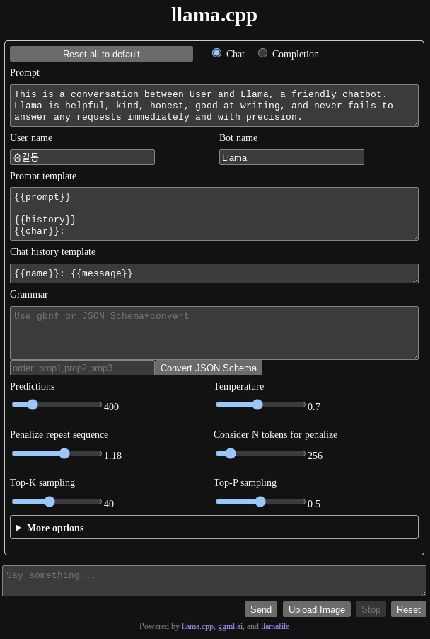
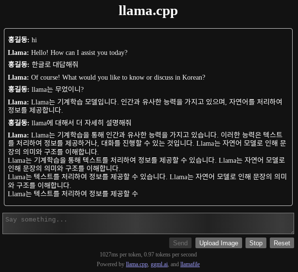

로컬에서 Llamafile 돌려보기
소개
llamafile은 하나의 파일로 로컬환경에서 텍스트 생성형 AI-Llama를 쉽게 돌릴 수 있는 툴이다.
현재 실행파일내에 embed헝태로 지원하는 모델은 3개이다
- Mistral-7B-Instruct : 텍스트 생성 AI
- LLaVA 1.5 : 이미지 인식 텍스트 생성형 AI
- WizardCoder-Python-13B : 파이썬 코딩 특화 LLM
현재 *nix, mac, windows모두 지원한다. (하지만 윈도우즈에서는 실행파일 크기가 4G가 넘으면 실행이 불가한 문제로 모델파일을 따로 다운로드 하고 인수로 넘겨서 실행해야 한다)
테스트 환경
- CPU : Intel i5 6600
- Memory : 32G
- GPU : 사용하지 않음
제약사항
- 메모리가 최소 런타임 파일 사이즈 만큼 필요. 예를 들어 Mistral-7B-Instruct의 경우 사이즈가 4G이므로 메모리를 4G이상 사용한다.
- GPU를 사용하지 않을 경우 CPU 사용량이 엄청 높다(응답 생성시 100%사용, 아이들링시에도 35% 정도 사용). 그래서 GPU가 필수일 듯
테스트
-
초기화면에서 옵션을 설정할 수 있다.

-
한글도 잘 된다. 하지만 중간에 응답이 끊겼다

결론
시스템 리소스를 너무 많이 써서 실사용이 힘들다. GPU가 있는 고사양 장비를 가지고 있는 분들은 시도해볼만 하겠다. 그래서 나는 그냥 ChatGTP를 계속 쓰기로…